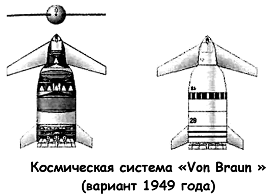
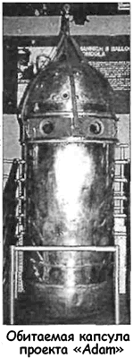
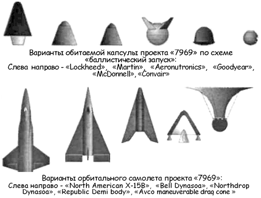
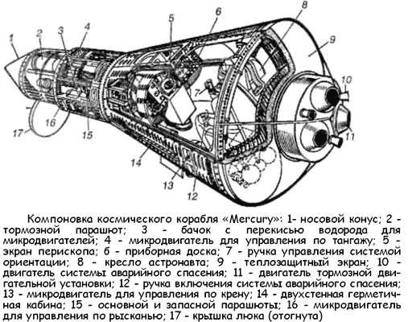

Варианты проекта «Man in Space»
Одним из таких вариантов, который был реализован в нашей реальности с большим опозданием, является первый полет на орбиту американского космонавта. Соединенные Штаты могли ответить на вызов, брошенный советскими ракетчиками, но отставание в космических технологиях было слишком велико, чтобы без труда перехватить пальму первенства. Осень 1957 года преподнесла президенту Эйзенхауэру и всей республиканской администрации тяжелейший, но необходимый урок. Было сделано два важнейших вывода: первый — Америка заметно уступает Советскому Союзу в области ракетостроения и космонавтики, из-за чего страдает обороноспособность западного мира, второй — чтобы преодолеть отставание Америки в этой области, необходимо объединить усилия и ресурсы всех заинтересованных ведомств в рамках одной организации, которая будет заниматься только космической программой.
Еще в октябре 1957 года члены «Американского ракетного общества» призывали создать научно-исследовательское агентство по космонавтике. В ноябре с такой же инициативой выступила Национальная Академия наук.
К апрелю 1958 года американскими конгрессменами было представлено 29 законопроектов, касающихся организации национальной космической программы; все авторы этих документов сходились в одном — космонавтикой должна заниматься одна единственная организация, которая сможет скоординировать разрозненные усилия военных и гражданских ведомств, направленные на преодоление отставания Америки в космической гонке. 14 апреля с аналогичным законопроектом выступила и президентская администрация.
После нескольких месяцев дебатов парламент утвердил соответствующий законопроект, и 29 июля 1958 года состоялось рождение НАСА — Национального управления по аэронавтике и исследованию космоса (National Aeronautics and Space Administration, NASA). Управление было образовано на базе Национального консультативного совета по аэронавтике (НАКА), и специалисты этой уважаемой организации (8 000 сотрудников) составили ядро нарождающейся корпорации. Помимо совета по аэронавтике в состав НАСА была интегрирована Лаборатория реактивного движения Калифорнийского технологического института (около 2, 5 тысяч человек), военно-морской флот отдал свою группу, работавшую над проектом «Авангард» (200 специалистов), а в 1960 году в НАСА перешел Вернер фон Браун со своим отделом проектирования Управления баллистических ракет армии.
Главной задачей, которая ставилась перед НАСА и заслужившим доверие высших кругов «ракетным бароном», была отправка человека в космос. Все понимали, что это следующий логический шаг в развитии космонавтики, и здесь снова особое значение приобретает вопрос о приоритете.
«С точки зрения пропаганды, — писал корреспондент газеты «Нью-Йорк геральд трибюн», — первый человек в космосе стоит, возможно, более сотни дивизий или дюжины межконтинентальных баллистических ракет».
Разумеется, работы по этой амбициозной программе начались еще до учреждения НАСА. Военные конструкторские бюро вели эскизное проектирование пилотируемых космических аппаратов, надеясь в будущем ухватить свой кусок лакомого пирога.
Это может показаться странным, но главными энтузиастами и популяризаторами идеи пилотируемого космического полета в послевоенной Америке были ракетчики из Пенемюнде. Уже в 1946 году Вернер фон Браун делал для армии США расчет применимости баллистической ракеты «А-12» для вывода полезных грузов (в том числе обитаемой капсулы с космонавтом) на орбитальную высоту. Впоследствии эти расчеты вылились в проект космической системы под условным наименованием «Фон Браун» («Von Braun»), состоявшей из двухступенчатой ракеты-носителя и орбитального самолета.

Эта система была представлена «ракетным бароном» на первом научном симпозиуме, посвященном пилотируемому космическому полету. Он состоялся 12 октября 1950 года в планетарии Нью-Йорка и собрал под одной крышей как ведущих немецких, так и американских специалистов, трудившихся над различными аспектами космической программы. Ракетная система «Фон Браун», по замыслу ее разработчиков, должна была обеспечить первый пилотируемый полет в космическое пространство, экспедицию на Луну и Марс, а в перспективе — программу строительства орбитальной станции.
По результатам симпозиума журнал «Коллиерз» опубликовал серию статей под общим заголовком «Скоро человек победит космос». По утверждению самих американцев, эта публикация была важнейшим шагом в деле популяризации космических полетов на земле Америки.
После запуска спутника «ПС-1» Вернер фон Браун наряду с предложениями по реанимации проекта «Орбитер» выдвинул новую программу пилотируемого полета, фигурировавшую под названием «Проект Адам» («Project Adam»). Эта программа включала двухлетний план работ по подготовке суборбитального полета человека, который должен был состояться до конца 1960 года. В качестве носителя предполагалось использовать модернизированную ракету «Редстоун», обитаемой капсулы — герметичную гондолу от стратостатов, используемых ВВС для высотных исследований. При этом гондола размещалась в приборном отсеке ракеты, подобно тому как размещаются возвращаемые капсулы геофизических ракет.
Согласно расчетам Вернера фон Брауна, «Редстоун» должна была вывести гондолу с человеком на высоту около 240 километров; после этого гондола отделяется от носителя и не менее 6 минут двигается по баллистической траектории, затем выпускается парашют и гондола совершает приводнение.
В ходе такого суборбитального полета планировалось изучить жизнедеятельность человеческого организма в условиях перегрузки и невесомости, проверить в натурных условиях работоспособность систем ручного управления и связи, выработать критерии конструирования обитаемых капсул для будущих космических аппаратов. Кроме того, как отмечалось в докладной записке, запуски по проекту «Адам» позволят утвердить факт технического превосходства США в глазах мировой общественности.

На подготовку и осуществление первого суборбитального запуска Управление баллистических ракет армии просило выделить сумму в 11,5 миллиона долларов, причем 4,75 миллиона следовало перечислить немедлено.
Проект «Адам» рассматривался в июле-августе 1958 года. Однако в связи с учреждением НАСА и переподчинением новому агентству всех структур, занимавшихся космонавтикой, он был отклонен. От проекта в будущей космической программе сохранится лишь схема суборбитального полета и носитель — ракета «Редстоун».
Военно-морской флот со своей стороны предложил проект пилотируемого разведывательного спутника «МЕР I» («MER I», сокращение от «Manned Earth Reconnaissance»), который, по мнению конструкторов Бюро аэронавтики ВМФ, мог быть использован как основа для программы подготовки пилотируемого космического полета.
Разработанная ими космическая система была довольно необычна: мощная двухступенчатая ракета-носитель выводила на орбиту цилиндрическую капсулу; из нее выдвигались две телескопические штанги с натянутым полотном; в результате образовывалось треугольное крыло, а сама капсула превращалась в планер, которым можно было бы управлять при спуске в атмосфере и посадке. Такая схема посадки заинтересовала Главное управление научных исследований, руководившее отбором космических проектов для программы пилотируемых полетов, и по его требованию Бюро аэронавтики ВМФ совместно с фирмой «Конвейр» («Convair») и авиационной компанией «Гудиер» («Goodyear Aircraft Corporation») начало эскизное проектирование космического корабля «МЕР II» («MER II»), однако к декабрю 1958 года проектные работы еще не был закончены, и флоту было отказано в дальнейшем финансировании.
К моменту возникновения НАСА наиболее продуманным был проект военно-воздушных сил «Человек в космосе за кратчайший срок» («Man in Space Soonest»), проходивший в документах под обозначением «7969» («Project 7969»).
Первые работы по проекту «7969» начались еще в марте 1956 года в рамках программы создания пилотируемой баллистической ракеты для высотных исследований («Manned Ballistic Rocket Research System»). Тогда ВВС объявили конкурс на разработку обитаемой капсулы. В результате было получено 11 технических предложений.
В ходе консультаций по программе на всю систему «7969» было наложено важнейшее ограничение: ускорение не должно превышать 12 g. Из этого ограничения вытекало, что для запуска обитаемой капсулы на орбитальную высоту необходимо добавить еще одну ступень к баллистической ракете «Атлас» («Atlas»), выбранной в качестве носителя. Эта дополнительная ступень, первоначально названная «Хастлер» («Hustler»), впоследствии стала известна как ракета «Аджена» («Agena»), а вся система «Атлас-Аджена» хорошо зарекомендовала себя в качестве средства выведения на орбиту искусственных спутников Земли и автоматических межпланетных станций.
Одной из первых свой вариант пилотируемой космической системы для ВВС предложила фирма «Локхид» («Lockheed»). Обитаемая капсула «Lockheed Project 7969» представляла собой конус с диаметром в основании 2,7 метра, длиной 4,3 метра и массой 1400 килограммов. Согласно расчетам инженеров «Локхида», ракета-носитель должна была выводить капсулу на высоту в 480 километров; сам орбитальный полет мог продолжаться не более 5 часов. Сход с орбиты осуществлялся посредством ракетного тормозного двигателя со скоростью истечения рабочего тела 60 м/с. Перегрузки при этом не должны были превысить 8 g. Тепловой экран планировалось изготовить из бериллия.

На реализацию проекта «Локхид» запросила 100 миллионов долларов, при этом первый полет человека в космос мог состояться уже через два года. Другая авиационная фирма «Мартин» («Martin») предложила использовать в качестве носителя межконтинентальную баллистическую ракету «Титан» («Titan»). Обитаемая капсула «Martin Project 7969» (диаметр основания — 2,4 метра, длина — 4,3 метра, масса — 1600 килограммов) могла быть выведена этим носителем на орбиту высотой 240 километров; продолжительность полета составила бы 24 часа. Маневрирование корабля осуществлялось ракетными двигателями управления, сход с орбиты — двигателем торможения, имеющим скорость истечения 150 м/с. В отличие от орбитального корабля «Локхид», которым нркно было управлять вручную, капсулу проекта фирмы «Мартин» собирались снабдить автоматизированной системой управления — таким образом, человек внутри выступал в роли пассивного пассажира. Для предотвращения перегрева корпуса капсулы при спуске в атмосфере была предложена абляционная («сдуваемая») система охлаждения.
Первый пилотируемый полет на орбиту конструкторы фирмы «Мартин» обещали сделать реальностью через 30 месяцев после утверждения проекта.
Очень похожую космическую систему выдвинула на рассмотрение командования ВВС фирма «Аэронетроникс» («Aeronutronics»). Обитаемая капсула «Aeronutronics Project 7969» должна была иметь конусообразную форму с диаметром 2,1 метра в основании и головным сферическим обтекателем радиусом 30 сантиметров, полный вес капсулы -1150 килограммов. Пилот находился внутри герметичной сферы, карданно подвешенной внутри капсулы, сфера должна была вращаться, чтобы человеческое тело всегда было расположено вдоль продольной оси корабля. Сход с орбиты выполнялся посредством тормозного ракетного двигателя.
В качестве теплового экрана планировалось использовать графитовые пластины. В случае отказа ракеты-носителя до выхода корабля на орбиту капсула могла быть отстрелена.
Что касается сроков первого пилотируемого запуска, то специалисты «Аэронетроникс» были в оценках гораздо осторожнее своих коллег из «Локхид» и «Мартин»: они полагали, что такой полет состоится не ранее, чем через 6 лет после начала работ над проектом.
Предложение авиационной компании «Гудиер» («Goodyear») несколько отличалось от предыдущих. Обитаемая капсула «Goodyear Project 7969» имела вид сферы диаметром 2,1 метра и массой 900 килограммов, с задним хвостовым обтекателем и абляционным покрытием. Инженеры «Гудиер» полагали, что ракета «Атлас» или «Титан», снабженная дополнительной ступенью, забросит такую капсулу на орбиту высотой 650 километров, продолжительность полета при этом составит 5 дней. Сход с орбиты осуществляется тормозным ракетным двигателем со скоростью истечения 240 м/с.
Подобно «Локхиду», компания «Гудиер» запросила 100 миллионов долларов и обещала за эти деньги реализовать свой проект в течении двух лет.
Фирма «Макдоннелл» предложила капсулу, очень похожую на ту, которая позже использовалась как спускаемый аппарат советского космического корабля «Союз». Капсула «McDonnell Project 7969» диаметром 2,1 метра и весом 1090 килограммов могла быть поднята на орбиту высотой 160 километров ракетой «Атлас» с дополнительной ступенью, созданной на базе ракеты «Поларис» («Polaris»); время пребывания в космосе составило бы при этом 90 минут. Маневрирование на высоте должно было осуществляться пилотом вручную с использованием двигателей управления, сход с орбиты — тормозного двигателя. Перегрузки при возвращении не должны были превысить 8,5 g; тепловой экран изготавливался из бериллия.
Инженеры фирмы «Макдоннелл» брались запустить человека в космос через два года.
Совсем простой вариант космической системы по схеме «баллистического запуска» выдвинула на рассмотрение фирма «Конвейр». Шарообразная капсула «Convair Project 7969» диаметром 1,6 метра и весом 450 килограммов доставлялась ракетой «Атлас-Хастлер» на орбиту высотой 270 километров.
После выполнения задачи капсула сходила с орбиты под воздействием тормозного двигателя.
Конструкторы фирмы «Конвейр» были убеждены, что за счет простоты устройства капсулы их проект можно будет воплотить в жизнь уже через год после начала работ.
Помимо схемы «баллистического запуска» руководители ВВС и НАКА рассматривали также варианты «орбитального самолета».
В частности, для проекта «7969» фирма «Норт Америкен» («North American») предложила использовать в качестве пилотируемого спутника Земли свой ракетоплан «Икс-15Б» («Х-15В»). Для этого планировалось облегчить существующий ракетоплан «Х-15А» (об этой выдающейся машине мы подробно поговорим в главе 8) до массы 4,5 тонны.
Носителем должна была служить многоступенчатая крылатая ракета «Навахо» («Navaho»), которая могла бы поднять самолет на орбиту с апогеем в 120 километров и перигеем 75 километров. Из-за низкого перигея и самолетной аэродинамики «Х-15В» тормозной ракетный двигатель системе не требовался. Специалисты «Норт Америкен» полагали, что первый орбитальный старт по такой схеме состоится уже через 30 месяцев. Расходы на проект должны были составить 120 миллионов долларов.
Свой вариант «орбитального самолета» выдвинула и известная фирма «Белл» («Bell»). Проект был представлен в самом общем виде, поскольку, участвуя в конкурсе, инженеры «Белл» прежде всего рассчитывали пробудить интерес руководства ВВС к схеме так называемого «планирующего спуска». Если бы такая схема была одобрена, то, по расчетам специалистов фирмы, потребовалось бы не менее пяти лет и не менее 889 миллионов долларов, чтобы создать первый настоящий орбитальный самолет. Впоследствии прикидки инженеров «Белл» легли в основу программы создания космоплана «Дайна-Сор».
Другая известная фирма «Нортроп» («Northrop») предложила в качестве пилотируемого спутника ракетоплан типа «летающее крыло» «пустой» массой 5 тонн. Ракетоплан должен был стартовать с самолета-носителя и, постепенно увеличивая скорость, выходить на низкую орбиту. Фактически это был тот же «Х-15 В», но с другими линейными размерами.
Компания «Рипаблик» («Republic») нашла более оригинальное решение. Орбитальный самолет «Republic Project 7969», получивший название «Сани Ферри» («Ferri sled») пo имени главного конструктора Антонио Ферри, представлял собой треугольный в плане летательный аппарат весом 1800 килограммов. По периметру аппарата крепилась труба диаметром 60 сантиметров, служившая одновременно обтекателем и топливным баком для жидкостного ракетного двигателя. Помимо этого основного двигателя на «Ферри» устанавливались две твердотопливные ракеты, расположенные на законцовках «крыльев». Пилот находился в маленьком отсеке ближе к носу аппарата. Он мог взять на себя управление двигателем и всем кораблем, однако при штатном развитии ситуации этого не требовалось. Полет продолжительностью до 10 суток завершался сходом с орбиты и планированием в атмосфере с постепенным снижением скорости.
Когда скорость «Ферри» становилась ниже скорости звука, пилот должен был катапультироваться, чтобы приземлиться уже на парашюте.
В качестве ракеты-носителя для своего орбитального самолета конструкторы «Рипаблик» собирались использовать твердотопливную ракету, состоящую из трех или четырех ступеней. Например, первую ступень планировалось взять от ракеты «Минитмен» («Minuteman»), вторую — от ракеты «Поларис», последней ступенью служила ракета «Джумбо» («Jumbo»). В более упрощенном варианте (при использовании ракеты-носителя «Атлас-Поларис») орбитальный самолет «Ферри» мог быть запущен на низкую орбиту высотой 241 километр.
Инженеры компании «Рипаблик» полагали, что сумеют запустить в космос первый орбитальный самолет с пилотом на борту через 21 месяц. Однако их проект не встретил заинтересованности ни в Штабе ВВС, ни у руководства НАКА.
Необычную космическую систему для первого космического полета предложила и фирма «Авко» («Avco»). «Avco Project 7969» предусматривал создание шарообразного орбитального корабля с максимальным диаметром 2,1 метра, такой же длиной и весом 680 килограммов. Вместо тормозного ракетного двигателя конструкторы «Авко» планировали оборудовать капсулу уникальным парашютом из тончайших листов нержавеющей стали. Маневрирование на орбите и сход с нее осуществлялся при помощи пневматических микродвигателей, работающих на сжатом воздухе.
Согласно расчетам, эту капсулу должна была выводить на низкую орбиту высотой 190 километров межконтинентальная ракета «Титан», продолжительность пилотируемого полета при этом могла составить до 7 суток, максимальная перегрузка — 9 g. В случае отказа носителя третья верхняя ступень катапультировала бы капсулу на расстояние километра от терпящей катастрофу ракеты, после чего был бы выпущен парашют. При нормальном развитии событий капсула по завершении рабочей программы должна была мягко приземлиться в Канзасе, на выделенной территории площадью 650 на 300 километров.
Тут следует сказать, что ни одно из технических предложений, поступивших от авиационных фирм на конкурс, объявленный ВВС, не рассматривалось как отдельный проект, призванный решить конкретную и сиюминутную задачу завоевания приоритета в области пилотируемых космических полетов. Отобранный проект должен был стать необходимым этапом серьезнейшей программы по освоению околоземного пространства и ближайших планет, разрабатываемый в недрах военно-воздушных сил.
Когда в конце 1957 года министр обороны направил соответствующий запрос трем военным ведомствам: армии, ВМФ и ВВС, то раньше остальных на него ответили именно военно-воздушные силы, представив готовый пятилетний план развития космонавтики. План предусматривал создание спутниковой группировки, запуск на орбиту возвращаемых научно-исследовательских станций и пилотируемой капсулы, подготовку экспедиций на Луну и Марс.
Однако подобная программа — очень дорогое удовольствие даже для богатейшей страны. По оценке экспертов ВВС, только на то, чтобы объединить усилия и начать хоть сколько-нибудь осмысленную деятельность по пятилетнему плану, уже в будущем 1959 бюджетном году необходимо было выделить не менее 1,7 миллиарда долларов. И не нужно думать, будто бы в условиях космической гонки получить эти деньги было легко. Даже президент Эйзенхауэр, которого трудно заподозрить в недооценке значения космических разработок, как-то, выступая на заседании в Белом доме, заявил:
«Мне хотелось бы узнать, что происходит на обратной стороне Луны, но я не могу выделить на это средства в текущем году».
Тем не менее военно-воздушные силы не оставляли надежды на то, что именно их программе будет дан зеленый свет. С 29 по 31 января 1958 года на авиабазе Райт-Паттерсон (штат Огайо) проходила закрытая конференция, на которой авиационные фирмы представляли свои проекты пилотируемой космической системы. После конференции ВВС ускорили работы по своей космической программе.
Управлению авиационных систем было поручено отобрать наиболее дешевый и надежный вариант орбитального корабля, а Управление баллистических систем должно было выработать рекомендации по ракете-носителю.
Со своей стороны министр обороны Нейл Макэлрой поддержал усилия ВВС по развитию так называемой системы «117Л» («117L») — комбинированной ракеты «Атлас-Аджена». В соответствующем заявлении он указал, что работы в этом направлении исключительно важны и должны иметь «самый высокий национальный приоритет» над лю быми другими проектами. 10 марта началась большая конференция, организованная Штабом ВВС в центральном офисе Управления баллистических систем, находившемся в Лос-Анджелесе (штат Калифорния). На ней присутствовали более чем 80 специалистов, представлявших военно-воздушные силы, промышленность и НАКА. На конференции впервые была названа главная ближайшая цель ВВС — экспедиция на Луну. В качестве промежуточного этапа при достижении этой цели рассматривался «сокращенный план» отправки человека на орбиту.
Участники конференции вновь говорили о том, что схема такого запуска должна быть как можно проще, что позволило бы добиться конкретного результата в кратчайший срок.
В ходе обсуждения назывались ориентировочные характеристики будущей пилотируемой космической системы.
Почти без возражений предпочтение было отдано «баллистической» схеме запуска. Обитаемая капсула должна была весить от 1225 до 1360 килограммов, иметь диаметр 1,83 метра и высоту 2,44 метра. Система жизнеобеспечения, разрабатываемая для орбитальной капсулы, могла поддерживать жизнь пилота не менее 48 часов. Поскольку в те времена ни у кого из специалистов не было уверенности в том, что человеческий организм сможет нормально функционировать в условиях невесомости, система управления капсулой планировалась полностью автоматизированная; элементы ручного управления рассматривались в качестве резервных для проведения экспериментов по орбитальному пилотированию.
Максимальные перегрузки при старте и возвращении не должны были превышать 9 g, температура — 65 °C. Теплозащиту обеспечивал носовой обтекатель ракеты с абляционным покрытием. Посадка предусматривалась на воду, в районе Багамских островов.
Пока в Конгрессе обсуждались отдельные положения будущего «Закона об авиации и космических исследованиях», ВВС продолжали свои исследования. Знаменитый план завоевания космического пространства военно-воздушными силами обретал все более зримые черты. Теперь он был разделен на четыре фазы.
Первая фаза, называемая «Человек в космосе за кратчайший срок» («Man-in-Space-Soonest»), предусматривала подготовку и реализацию запуска обитаемой капсулы на орбиту по «баллистической» схеме; планировалось, что первоначально в космос будут запущены подопытные обезьяны, и лишь потом полетит человек.
Во второй фазе «Человек в космосе, продолжение» («Man-in-SpaceSophisticated») планировалось подготовить и запустить более тяжелую пилотируемую капсулу, способную находиться на орбите не менее 14 дней — фактически орбитальную станцию.
Третья фаза «Исследование Луны» («Lunar Reconnaissance») включала мягкую посадку на Луну автоматической станции с научным оборудованием, включающим телевизионную камеру.
В ходе реализации четвертой фазы амбициозного плана «Высадка на Луну и возвращение» («Manned Lunar Landing and Return») инженеры ВВС собирались построить огромный космический корабль, способный не только подняться в космос, но и облететь Луну, совершить мягкую посадку на ее поверхность и вернуться назад.
Детальное обсуждение первой фазы состоялось 2 мая 1958 года в Штабе ВВС. По его итогам было принято решение о создании ракеты «Тор-117Л» («Thor-117L») на базе баллистической ракеты среднего радиуса действия «Тор» и разрабатываемой ракетно-транспортной системы «117Л» («Атлас-Аджена»). Специалисты заверяли, что если все пойдет по плану, то фаза «Человек в космосе за кратчайший срок» может быть завершена к октябрю 1960 года.
Тем временем конструкторы авиационных компаний «Авко» и «Конвейр» объединились, чтобы разработать новый проект пилотируемого спутника. Теперь они предложили еще более простую схему. Согласно их новому проекту, ракета «Атлас» должна была доставить обитаемую капсулу весом 900 килограммов на низкую орбиту, сход с которой осуществлялся при помощи тормозного парашюта.
Проект рассматривался в Управлении баллистических систем. Было показано, что новая космическая система не дает заметного преимущества по времени — всего лишь 3 или 4 месяца. При этом схема не предусматривала возможности катапультирования пилота в случае какого-либо сбоя при старте, что могло привести к его гибели.
К концу июня стало ясно, что программа, предложенная ВВС, намного превосходит по проработанности все, что успели сделать в этом направлении другие ведомства. Однако создание «гражданской» космической организации НАСА перечеркнуло планы военно-воздушных сил. 1 сентября 1958 года президент Эйзенхауэр своим указом возложил ответственность за осуществление космической программы на Национальное управление по аэронавтике и исследованию космического пространства и присвоил этой программе высшую категорию срочности: «Д-Икс». Злые языки поговаривают, будто бы американский президент был противником идеи пилотируемых полетов и сознательно отказался от услуг ВВС, опасаясь, что это могущественное ведомство сумеет развернуть на основе проекта «Человек в космосе» свой долгосрочный план, тогда как в НАСА по реализации этого проекта дальнейшие работы в области пилотируемой космонавтики будет легко свернуть.
Так или иначе, но еще целый месяц у специалистов НАСА ушел на то, чтобы подготовить конечный вариант проекта «Человек в космосе»; только с середины декабря программа подготовки запуска пилотируемого спутника стала официально называться «Меркурий» («Mercury»).
Фактически это был проект, отобранный Главным управлением по научно-исследовательской работе, которое занималось координацией работ по космической программе, пока в Конгрессе обсуждался новый закон о космическом агентстве. 7 октября доктор Кит Гленнан, первый директор НАСА, утвердил этот проект.
С первых же дней своего существования Национальное космическое агентство активно эксплуатировало наработки предшественников. В проекте «Меркурий» можно увидеть элементы проектов Вернера фон Брауна, и военно-воздушных сил, и НАКА. Это и понятно, ведь НАСА были переподчинены не только отдельные коллективы, но и целые отрасли, принадлежавшие ранее этим ведомствам.
Авторство, впрочем, приписывают сотруднику НАКА Максу Фагету, который еще в 1957 году разработал эскизный проект космического корабля для суборбитального полета (с помощью ракеты «Редстоун») и орбитального полета (с помощью ракеты «Атлас»). А основная нагрузка по проектированию и созданию космического корабля была возложена на авиационную компанию «Макдоннелл»; она заполучила этот выгодный контракт, обойдя в последний момент главного конкурента — фирму «Грумман» («Grumman»).
Работа над проектом закипела, начался отбор в отряд будущих астронавтов. Однако триумфального восшествия на космический Олимп не получилось. Задачка оказалась посложнее, чем думали конструкторы НАСА. В заявленные сроки (а первый запуск капсулы с пилотом на орбиту, согласно программе «Меркурий», должен был состояться в первой половине 1960 года) американцы не уложились.
Впервые макет орбитального корабля «Меркурий» был запущен с мыса Канаверал 9 сентября 1959 года. В качестве носителя использовалась новая ракета «Атлас-Д» («Atlas D»), прозванная создателями «Большой Джо» («Big Joe»). Этот суборбитальный запуск, призванный проверить работоспособность выбранного носителя и изучить механику полета всей космической системы, прошел успешно. Поскольку результаты запуска признали удовлетворительными, то повторные испытания были отменены. Последующие эксперименты и запуски с целью проверки отдельных узлов также не вызвали нареканий. Плановое развитие программы позволило фирме «Макдоннелл» в апреле I960 года начать разработку большого и долгоживущего космического корабля «Меркурий Марк I» («Mercury Mark I») — прототипа орбитальной станции. Впоследствии этот проект лег в основу программы «Джемини» («Gemini»).
Проблемы начались в тот период, когда казалось, что все уже готово для исторического запуска. 29 июля 1960 года космический корабль «Меркурий-1» разрушился в результате отказа ракеты-носителя «Атлас-Д» на 58-й секунде полета.
Установить причину отказа не удалось. Поэтому были выработаны самые общие рекомендации по усилению прочности носителя и установке дополнительной контрольноизмерительной аппаратуры.

21 ноября 1960 года была предпринята попытка запуска корабля «Меркурий-2» с армейской ракетой «Редстоун».
В первые же секунды старта произошло выключение двигателей, и система аварийного спасения отстрелила капсулу.
К счастью, разрушения стартового стола оказались незначительные, а «Меркурий-2» удалось даже восстановить и использовать в дальнейшем.
Тут следует отметить, что 1960 год — это год президентских выборов в Америке. Критике подвергались любые действия предыдущей республиканской администрации; не обошли демократы вниманием и космос. Главный претендент на пост президента — сенатор Джон Ф. Кеннеди — довольно много в своих публичных выступлениях говорил о необходимости пересмотра существующей политики в отношении космических исследований: «Администрация пытается «догнать» Советы в космосе, но при этом упускает из виду, что у космической гонки есть два различных аспекта. Идет чисто научное соревнование, в котором США добились значительных успехов и даже превосходят советские достижения. В то же самое время имеет место психологическое соревнование, в ходе которого США и СССР пытаются произвести впечатление на мировую общественность с помощью эффектных и захватывающих воображение технических достижений. Первые попытки администрации осуществлять космическую деятельность при недостаточных бюджетных ассигнованиях затрудняют ведение соревнования в сфере эффектных технических достижений в космосе. [..] США не сумели сформулировать свою истинную задачу в космосе. Если речь идет о решении чисто научных задач, то об этом должно быть заявлено таким образом, чтобы это было понятно американскому народу и всем другим. Если мы хотим «выиграть космическую гонку», то и об этом необходимо заявить и направить космическую программу на достижение этой цели».
Понятно, что подобные критические заявления и нервная атмосфера предвыборной кампании не способствовали творческому процессу и собранности, так необходимой в кризисной ситуации.
Тем не менее следующий старт ракеты «Редстоун» с «Меркурием» состоялся менее чем через месяц — 19 декабря 1960 года. На этот раз программа запуска была выполнена в полном объеме. При этом космическая система достигла высоты в 210 километров и скорости 2,2 км/с. В НАСА вздохнули с облегчением.
Но сразу решиться на суборбитальный полет человека, несмотря на выход из графика, руководители НАСА не могли.
Поэтому 31 января 1961 года в кабину «Меркурия-2» поместили 17-килограммового шимпанзе по кличке Хэм. Полет в целом прошел успешно. Только из-за повышенного расхода жидкого кислорода двигатель ракеты «Редстоун» отключился на несколько секунд раньше и система автоматического управления отстрелила капсулу с обезьяной. Кроме того, после приводнения капсула дала течь, и корабль едва не затонул.
Хэм стоически перенес все эти приключения, но впоследствии, когда ему показывали космический корабль «Меркурий», всячески демонстрировал свое нежелание иметь хоть какое-то отношение к космической программе. (Любопытно, что это было далеко не первое животное, которое специалисты НАСА «ангажировали» для медикобиологических экспериментов. Несколько ранее агентство планировало запускать на орбиту подопытных свиней, но отказалось от этих планов, поскольку было доказано, что свиньи плохо переносят длительные перегрузки. Тем не менее специалисты фирмы «Макдоннелл» использовали свинью по кличке Нежная Бесс, чтобы выяснить последствия воздействия перегрузок при аварийном катапультировании и ударе обитаемой капсулы «Меркурия» о воду.) Следующий запуск «Меркурия-2» на ракете-носителе «Атлас-Д» состоялся 21 февраля. Его целью была проверка эффективности теплозащиты и работоспособности систем контроля. Он прошел более чем успешно, и отобранные для первого полета астронавты выразили желание лететь прямо сейчас. Однако Вернер фон Браун, на плечи которого легла основная тяжесть по модернизации и подготовке ракет-носителей, колебался.
Современные американские историки до сих пор ставят ему эти колебания в вину, утверждая, что если бы «ракетный барон» дал свое согласие на суборбитальный полет «Меркурия» с пилотом на борту уже в феврале, то сегодня приоритет Америки в этом историческом начинании никто не смел бы оспорить, а первым космонавтом планеты считался бы не Юрий Гагарин, а кто-нибудь из отобранной тройки — Алан Шепард, Джон Гленн или Вирджил Гриссом. Однако можно понять и фон Брауна. Последние старты, несмотря на положительный конечный результат, выявили множество недоделок в конструкции ракет. А немецкий конструктор хорошо помнил по опыту запусков первых «Фау-2» и «ЮпитерС», что успех в самом начале не гарантирует стопроцентную надежность в дальнейшем. Катастрофы космического корабля с американским пилотом на борту ему не простили бы. Он хотел быть уверен, что к полету готовы и сам корабль, и ракета, и наземные службы, а потому настоял на необходимости еще одного беспилотного запуска, который и был осуществлен 24 марта 1961 года.
Теперь уже все было готово для того, чтобы отправить в космическое пространство человека. Старт назначили на 24 апреля. НАСА разослало приглашения редакторам ведущих журналов и газет; аккредитацию получили 350 корреспондентов.
Именно этим людям предстояло рассказать всему миру о новом достижении Америки. И сегодня, читая их цветистые репортажи, мы забывали бы о том, что этот запуск не мог считаться по-настоящему космическим, поскольку и по сей день границы космоса твердо не определены, а единственным верным критерием, по которому можно отличить космический спутник от пушечного ядра, — это его способность к продолжительному полету без падения на землю. Мы забывали бы и о том, что вес космического корабля «Меркурия» в четыре раза ниже, чем вес корабля «Восток», а продолжительность жизни на орбите — в три раза меньше. Сам факт первого полета завораживал бы нас и весь мир, ложась еще одним кирпичиком в миф о Великой Америке.
Но вышло иначе. И день 12 апреля 1961 года все расставил на свои места. Америке снова пришлось довольствоваться ролью второго плана, играть в «догонялки». 5 мая 1961 года ракета «Редстоун» подняла на высоту1 186,2 километра космическую капсулу «Фридом-7» («Freedom 7», «Меркурий-3»), в которой находился летчик военноморской авиации Алан Шепард. Первый американский космический полет, как и планировалось, был суборбитальным и продолжался всего 15 минут.
Настоящий орбитальный полет «Меркурия» с пилотом на борту состоялся лишь 20 февраля 1962 года. Внутри капсулы «Френдшип-7» («Friendship-7», «Меркурий-6»), совершившей три витка вокруг Земли, находился летчик-испытатель Джон Гленн.